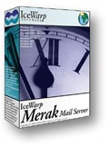

- system -
) Happy Users Interesting reading Contributors Important links Other places to download stuff System 6 Heaven around the Web Index . . Welcome to the System 6 Heaven Welcome to the System 6 Heaven System 6 will make any vintage Macintosh computer as fast as a G3. It was way ahead of its time and can do far more than most people know. It needs very little memory and takes up a small amount of hard disk space.
|
However, it is important to keep in mind that the more services that use nobody, the more files and processes that user will become associated with, and hence the more privileged that user becomes. . System Accounts FreeBSD Handbook Prev Chapter 8 Users and Basic Account Management Next 8. 4 System Accounts System users are those used to run services such as DNS, mail, web servers, and so forth. The reason for this is security; if all services ran as the superuser, they could act without restriction. |
|  |
The use of part or all of any article for any purpose is not permitted without written permission from Andrews Publishing, Incorporated. . Bennett ALARM SYSTEM USERS IS IN ASSOCIATION WITH AMAZON. SUSY SAYS, "TRY SELF DEFENSE SECURITY FOR PEACE OF MIND. YOUR ADVERTISEMENT HERE WITH LINK TO YOUR SITE WITH VIEWABLE HIT COUNTER. |
|
However, the University of Arizona and Residence Life Information Services assume no responsibility for its use. . Conduct System Users' Guide Conduct System Users' Guide This Guide provides instructions on using University of Arizona Residence Life web-based Conduct system. Table of Contents Introduction Overview of the Conduct Program Entering a New Conduct Incident Witness Reports Administrative Tasks Published by The University of Arizona, Residence Life Information Services Unit, in conjunction with Residence Life Residental Education Unit. Every effort has been made to supply complete and accurate information. |
read more at: http://www.UNIX-systems.org/